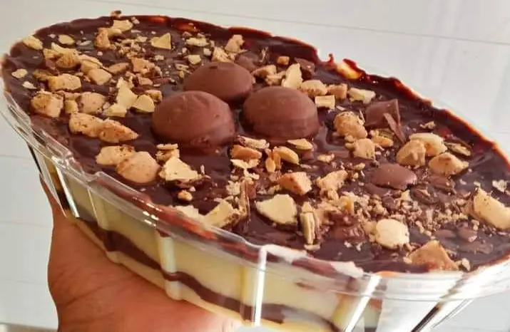

Receita de Pavê

Ingredientes:
- 1 lata de creme de leite
- 1 lata de leite (a mesma medida da lata de creme de leite)
- 2 latas de leite condensado
- 2 gemas
- 2 colheres de maisena
- 3 colheres de chocolate em pó ou achocolatado
- biscoito maisena
- leite para molhar os biscoitos
- raspas de chocolate (opcional)
- manteiga sem sal ou margarina, só para dar o ponto
Modo de Preparo:
- Primeiro, pegue a lata de leite condensado, as gemas, a maisena e o leite.
- Coloque no fogo e deixe até que fique um creme, reserve.
- Coloque a segunda lata de leite condensado com um pouco de margarina e o chocolate.
- Deixe no fogo até ficar um creme tipo brigadeiro.
- Desligue o fogo e junte com o creme de leite.
Montagem:
- Coloque primeiro o creme branco.
- Em seguida, mergulhe os biscoitos no leite e coloque sobre o creme branco.
- Depois, coloque o creme preto e acrescente as raspas de chocolate sobre ele.
- Deixe no congelador durante 2 horas.
Voltar ao Menu